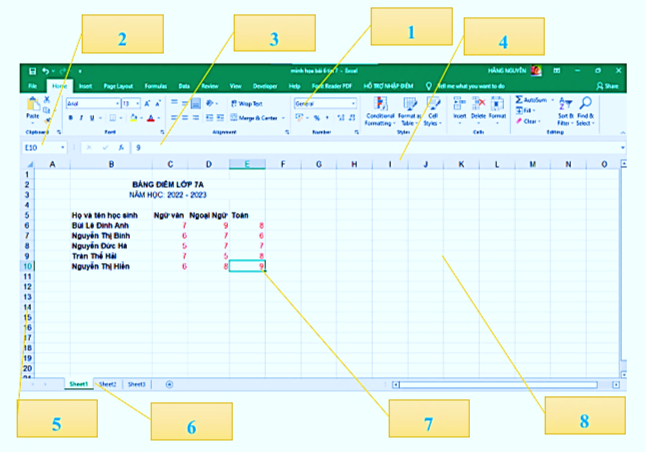
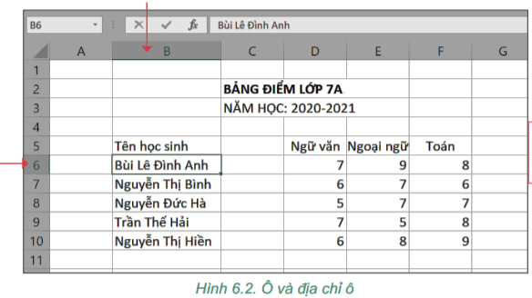
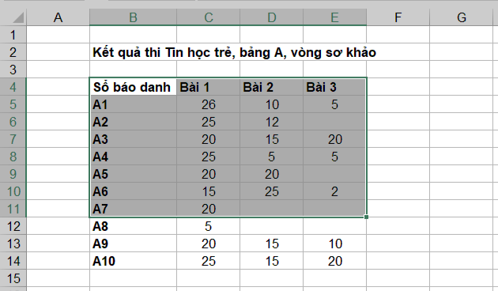
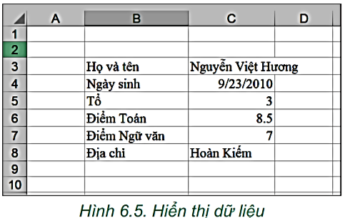

KẾ HOẠCH BÀI DẠY
MÔN: TIN HỌC 7 – BỘ SÁCH KẾT NỐI TRI THỨC VỚI CUỘC SỐNG
CHỦ ĐỀ 4: ỨNG DỤNG TIN HỌC
BÀI 6: LÀM QUEN VỚI PHẦN MỀM BẢNG TÍNH
Thời gian thực hiện: 1 tiết (45 phút) – SGK trang 28–31
I. MỤC TIÊU
1) Kiến thức
Nêu được một số chức năng cơ bản của phần mềm bảng tính: lưu trữ và trình bày thông tin dưới dạng bảng, thực hiện tính toán, xây dựng biểu đồ trực quan.
Nhận biết và nêu được chức năng chính của các thành phần trên giao diện phần mềm bảng tính: băng lệnh (thẻ và nhóm lệnh), hộp địa chỉ, vùng nhập dữ liệu, hàng ghi tên cột, cột ghi tên hàng, ô hiện thời, các trang tính, khu vực hiển thị dữ liệu.
Nêu được quy tắc đặt địa chỉ ô (<địa chỉ ô> = <tên cột><tên hàng>) và địa chỉ vùng (<địa chỉ ô góc trên bên trái>:<địa chỉ ô góc dưới bên phải>).
Thực hiện được thao tác chọn một ô, một hàng, một cột, một vùng trên trang tính.
Nêu và thực hiện được cách nhập dữ liệu vào ô tính; biết dữ liệu văn bản tự động căn trái, dữ liệu số và ngày tháng tự động căn phải; nêu được hai cách chỉnh sửa dữ liệu trong ô tính.
2) Năng lực
a) Năng lực chung
Tự chủ và tự học: chủ động đọc SGK trang 28–31, thao tác khám phá giao diện phần mềm bảng tính trên máy tính.
Giao tiếp và hợp tác: trao đổi, thảo luận trong nhóm (Think – Pair – Share, Phòng tranh); lắng nghe và nhận xét kết quả của bạn.
Giải quyết vấn đề và sáng tạo: phân tích vì sao dự án cần dùng phần mềm bảng tính; suy luận cách tính số ô trong một vùng hình chữ nhật.
b) Năng lực Tin học
NLa (Sử dụng và quản lí phương tiện công nghệ thông tin và truyền thông): nhận biết các thành phần giao diện, thực hiện thao tác chọn, nhập và chỉnh sửa dữ liệu trên phần mềm bảng tính.
NLc (Giải quyết vấn đề với sự trợ giúp của công nghệ thông tin và truyền thông): chọn phần mềm bảng tính để lưu trữ, tính toán số liệu của dự án "Trường học xanh".
c) Năng lực số (NLS)
1.3.TC1 – Quản lí dữ liệu, thông tin và nội dung số (mức L6–L7): tổ chức dữ liệu thành bảng có hàng, cột, ô có địa chỉ rõ ràng trên trang tính để lưu trữ và truy xuất.
5.2.TC1 – Xác định nhu cầu và giải pháp công nghệ (mức L6–L7): giải thích vì sao chọn phần mềm bảng tính thay cho bảng trong phần mềm soạn thảo văn bản để xử lí số liệu của dự án. [GV đối chiếu lại CV3456]
d) Năng lực Trí tuệ nhân tạo (AI)
A1 – Tính chủ động của con người (Xác thực kết quả): nêu được hậu quả khi không kiểm chứng kết quả do công cụ AI đưa ra (ví dụ danh sách cây trồng, đơn giá do AI gợi ý) và biết cần đối chiếu với thực tế trước khi nhập vào bảng tính (1 câu hỏi ở hoạt động Vận dụng, GV tự soạn).
3) Phẩm chất
Chăm chỉ: tự giác nghiên cứu bài, thực hành thao tác trên máy tính, kiên trì sửa lỗi khi nhập sai.
Trách nhiệm: tuân thủ nội quy phòng máy, bảo quản thiết bị; có trách nhiệm với nhiệm vụ của nhóm.
Trung thực: ghi số liệu trung thực, không sao chép nguyên xi kết quả AI chưa kiểm chứng.
II. THIẾT BỊ DẠY HỌC VÀ HỌC LIỆU
1. Giáo viên
Kế hoạch bài dạy, bài trình chiếu; hình ảnh khuôn viên trường (khởi động); Hình 6.1, 6.2, 6.3, 6.5 SGK.
Phòng máy tính (hoặc máy tính cá nhân) đã cài phần mềm bảng tính (Microsoft Excel, LibreOffice Calc hoặc Google Sheets), máy chiếu.
Phiếu học tập số 1, số 2 (ở phụ lục cuối bài); bộ thẻ chọn đáp án A, B, C, D.
Lưu ý (GV): kiểm tra cài đặt định dạng ngày tháng của máy (tháng/ngày/năm hay ngày/tháng/năm) trước khi cho HS nhập ngày ở Hoạt động 2.
2. Học sinh
Sách giáo khoa Tin học 7 (Kết nối tri thức với cuộc sống), trang 28–31; vở ghi, bút.
III. TIẾN TRÌNH DẠY HỌC
1. Khởi động (5 phút)
a) Mục tiêu:
Gợi mở tình huống dự án "Trường học xanh" (SGK trang 28), giúp HS nhận ra cần một phần mềm phù hợp để quản lí và tính toán nhiều số liệu.
b) Nội dung: HS thảo luận cặp đôi 4 câu hỏi ở mục mở đầu (SGK trang 28).
c) Sản phẩm: Câu trả lời của HS cho 4 câu hỏi; HS nhận ra cần dùng phần mềm bảng tính (xem ô Dự kiến).
d) Tổ chức thực hiện:
| Hoạt động của giáo viên | Hoạt động của học sinh |
|---|---|
Bước 1: Chuyển giao nhiệm vụ
| Bước 1: Chuyển giao nhiệm vụ
|
Bước 2: Thực hiện nhiệm vụ
| Bước 2: Thực hiện nhiệm vụ
|
Bước 3: Báo cáo, thảo luận
| Bước 3: Báo cáo, thảo luận
|
Bước 4: Kết luận, nhận định
| Bước 4: Kết luận, nhận định
|
2. Hoạt động 1: Giao diện phần mềm bảng tính (11 phút)
a) Mục tiêu:
Nêu được khái niệm và một số chức năng cơ bản của phần mềm bảng tính.
Nhận biết và nêu được chức năng chính của các thành phần trên giao diện (NLS 1.3.TC1).
b) Nội dung: HS thực hiện Hoạt động 1 (SGK trang 28): quan sát giao diện một phần mềm bảng tính, nêu tên các vùng chính và chức năng; đọc mục 1 và Hình 6.1 (trang 28–29); hoàn thành Phiếu học tập số 1; trả lời 2 câu hỏi củng cố (trang 29).
c) Sản phẩm: Phiếu học tập số 1 đã hoàn thành; đáp án 2 câu hỏi củng cố: 1-A, 2-B.
d) Tổ chức thực hiện:
| Hoạt động của giáo viên | Hoạt động của học sinh |
|---|---|
Bước 1: Chuyển giao nhiệm vụ
 Hình 6.1. Giao diện phần mềm bảng tính
| Bước 1: Chuyển giao nhiệm vụ
|
Bước 2: Thực hiện nhiệm vụ
| Bước 2: Thực hiện nhiệm vụ
|
Bước 3: Báo cáo, thảo luận
| Bước 3: Báo cáo, thảo luận
|
Bước 4: Kết luận, củng cố
| Bước 4: Kết luận, củng cố
|
3. Hoạt động 2: Ô, vùng; nhập và chỉnh sửa dữ liệu (18 phút)
a) Mục tiêu:
Xác định được địa chỉ ô, địa chỉ vùng; thực hiện được thao tác chọn ô, hàng, cột, vùng (NLS 1.3.TC1).
Nêu và thực hiện được cách nhập, chỉnh sửa dữ liệu trong ô tính; biết quy tắc căn lề mặc định của dữ liệu văn bản, số, ngày tháng.
b) Nội dung: Nhiệm vụ 1: thực hiện Hoạt động 2 (SGK trang 30), quan sát Hình 6.2, 6.3, đọc quy tắc địa chỉ ô, vùng, thao tác chọn và trả lời 3 câu hỏi (trang 31). Nhiệm vụ 2: thực hiện Hoạt động 3 (SGK trang 31): nhập dữ liệu theo Hình 6.4, 6.5 và thực hành chỉnh sửa dữ liệu.
c) Sản phẩm: Quy tắc địa chỉ ô, vùng; thao tác chọn đúng trên máy; đáp án 3 câu hỏi; hai cách nhập, hai cách sửa dữ liệu; quy tắc căn lề mặc định; Phiếu học tập số 2.
d) Tổ chức thực hiện:
| Hoạt động của giáo viên | Hoạt động của học sinh |
|---|---|
Bước 1: Chuyển giao nhiệm vụ 1 (Ô và vùng, khoảng 10 phút)
 Hình 6.2. Ô và địa chỉ ô
 Hình 6.3. Vùng dữ liệu
| Bước 1: Chuyển giao nhiệm vụ 1 (Ô và vùng, khoảng 10 phút)
|
Bước 2: Báo cáo, kết luận nhiệm vụ 1
| Bước 2: Báo cáo, kết luận nhiệm vụ 1
|
Bước 3: Chuyển giao nhiệm vụ 2 (Nhập và chỉnh sửa dữ liệu, khoảng 8 phút)
 Hình 6.5. Hiển thị dữ liệu
| Bước 3: Chuyển giao nhiệm vụ 2 (Nhập và chỉnh sửa dữ liệu, khoảng 8 phút)
|
Bước 4: Báo cáo, kết luận nhiệm vụ 2
| Bước 4: Báo cáo, kết luận nhiệm vụ 2
|
4. Luyện tập (6 phút)
a) Mục tiêu:
Củng cố giao diện, địa chỉ ô, vùng, quy tắc căn lề dữ liệu.
b) Nội dung: HS trả lời 4 câu trắc nghiệm nhanh (GV tự soạn dựa trên nội dung trang 28–31) bằng thẻ A, B, C, D.
c) Sản phẩm: Đáp án: 1-C, 2-B, 3-C, 4-D.
d) Tổ chức thực hiện:
| Hoạt động của giáo viên | Hoạt động của học sinh |
|---|---|
Bước 1: Chuyển giao nhiệm vụ
| Bước 1: Chuyển giao nhiệm vụ
|
Bước 2: Thực hiện nhiệm vụ
| Bước 2: Thực hiện nhiệm vụ
|
Bước 3: Báo cáo, thảo luận
| Bước 3: Báo cáo, thảo luận
|
Bước 4: Kết luận, nhận định
| Bước 4: Kết luận, nhận định
|
5. Vận dụng (5 phút)
a) Mục tiêu:
Vận dụng quy tắc căn lề để giải thích hiện tượng nhập ngày tháng; rèn thói quen kiểm chứng kết quả do AI đưa ra (AI A1).
b) Nội dung: HS trả lời 2 câu hỏi (GV tự soạn): một câu về căn lề dữ liệu ngày tháng, một câu về việc kiểm chứng kết quả AI khi lập bảng dữ liệu cho dự án "Trường học xanh".
c) Sản phẩm: Câu trả lời của HS cho hai câu hỏi.
d) Tổ chức thực hiện:
| Hoạt động của giáo viên | Hoạt động của học sinh |
|---|---|
Bước 1: Chuyển giao nhiệm vụ
| Bước 1: Chuyển giao nhiệm vụ
|
Bước 2: Báo cáo, thảo luận
| Bước 2: Báo cáo, thảo luận
|
Bước 3: Kết luận, dặn dò
| Bước 3: Kết luận, dặn dò
|
PHỤ LỤC: PHIẾU HỌC TẬP
Phiếu học tập số 1: Khám phá giao diện phần mềm bảng tính (5 phút)
Câu 1: Phần mềm bảng tính là gì? Nêu 3 chức năng chính của phần mềm bảng tính.
Câu 2: Nối tên thành phần giao diện (cột trái) với chức năng (cột phải) bằng cách ghi chữ cái vào cột giữa:
| Thành phần giao diện | Chữ cái | Chức năng |
|---|---|---|
| 1. Băng lệnh | A. Hiển thị địa chỉ của ô hiện thời. | |
| 2. Hộp địa chỉ | B. Nơi nhập dữ liệu trực tiếp vào bảng tính. | |
| 3. Vùng nhập dữ liệu | C. Chứa các thẻ và nhóm lệnh. | |
| 4. Hàng ghi tên cột | D. Các hàng được đặt tên 1, 2, 3,... từ trên xuống dưới. | |
| 5. Cột ghi tên hàng | E. Các cột được đặt tên A, B, C,... từ trái sang phải. | |
| 6. Các trang tính | F. Ô đang được chọn, có khung viền đen bao quanh. | |
| 7. Ô hiện thời | G. Nơi lưu trữ và hiển thị dữ liệu của bảng tính. | |
| 8. Khu vực hiển thị dữ liệu | H. Một bảng tính có thể có nhiều trang tính (Sheet1, Sheet2,...). |
Đáp án: 1-C, 2-A, 3-B, 4-E, 5-D, 6-H, 7-F, 8-G.
Phiếu học tập số 2: Ô, vùng và nhập dữ liệu
1. Viết quy tắc ghi địa chỉ ô: ........................................................................
2. Viết quy tắc ghi địa chỉ vùng: ......................................................................
3. Vùng A5:B10 có ...... cột, ...... hàng, tổng cộng ...... ô.
4. Nhập các dữ liệu sau vào các ô liên tiếp và ghi vị trí căn lề (trái hay phải):
| Dữ liệu nhập vào | Loại dữ liệu | Vị trí căn lề |
|---|---|---|
| Nguyễn Việt Hương | ||
| 9/23/2010 (hoặc 23/9/2010 tuỳ cài đặt máy) | ||
| 3 | ||
| 8.5 | ||
| Hoàn Kiếm |
Đáp án: 1) <địa chỉ ô> = <tên cột><tên hàng>; 2) <địa chỉ vùng> = <địa chỉ ô góc trên bên trái>:<địa chỉ ô góc dưới bên phải>; 3) 2 cột, 6 hàng, 12 ô; 4) văn bản – trái; ngày tháng – phải; số – phải; số – phải; văn bản – trái.